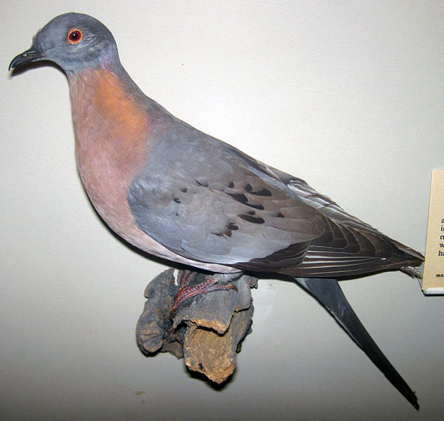
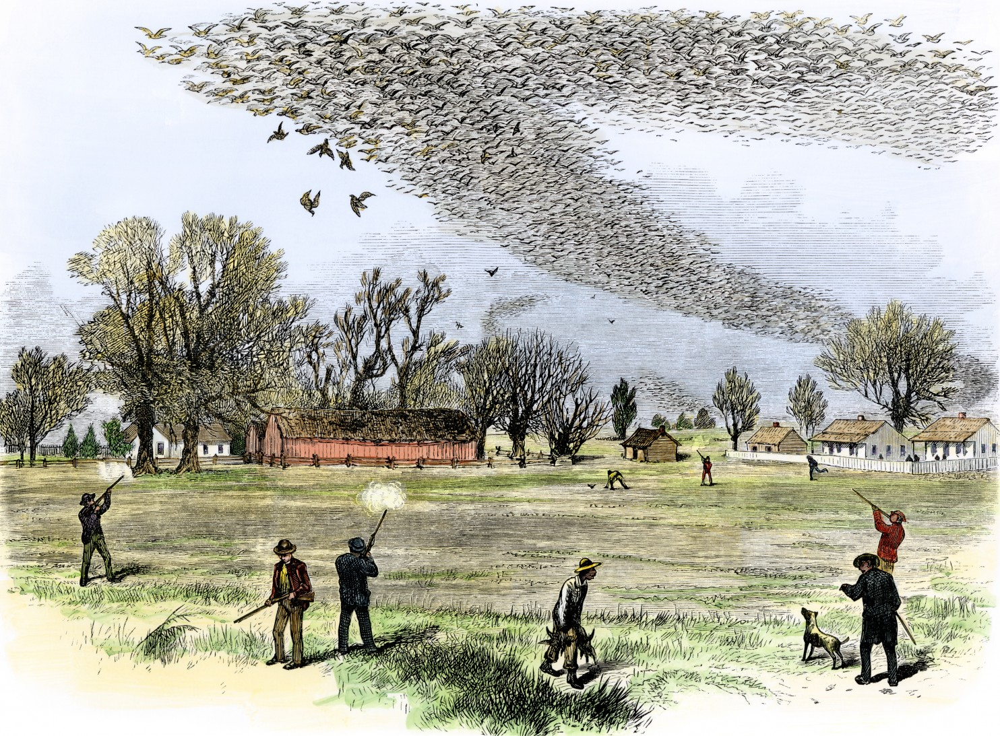

Passenger Pigeon/Allee effect
NRES 470/670
Spring 2022
Allee Effect

In the last lecture, we talked about how density-dependent feedbacks can help to regulate population densities over time. This is a negative feedback, and often termed ‘negative density dependence’.
What happens if density dependence goes the other way? What if an increase in density produces an increase in the population growth rate r (a positive feedback)?
Imagine a very social species, like the prairie dogs pictured above. If the density of prairie dogs is high, they can warn each other about predators. If the density is low, the predation rate might go up, resulting in higher d. This is a positive feedback, and can result in, well, you should simulate it for yourself! But remember, positive feedbacks generally result in unstable or non-regulated systems (audio feedback, avalanches, etc)!
This effect – whereby population growth rate may decrease when population size decreases – is called an Allee effect, named after ecologist Warder Clyde Allee (1885-1955). Allee specialized in social behavior and aggregations, and recognized the benefits of social aggregations to individual fitness.
Interestingly, Warder Allee’s interest in cooperation and the benefits of social aggregations spilled over into his life in other ways. He was a devout Quaker, an anti-war activist and an advocate of human social cooperation! From the Wikipedia article: “Allee saw ecologists as ‘social healers’ who were able to provide a naturalistic foundation for ethics through their research”

One of the most famous examples of a possible Allee effect involves the passenger pigeon (Ectopistes migratorius).

The passenger pigeon was one of the most abundant birds in North America. Some estimate that the total species abundance may have been over three billion at one time!
Aldo Leopold once said,
“Men still live who, in their youth, remember pigeons; trees still live who, in their youth, were shaken by a living wind. But a few decades hence only the oldest oaks will remember, and at long last only the hills will know.” —Aldo Leopold, “On a Monument to the Pigeon”, 1947
What happened to the passenger pigeon? Well, first of all pigeons were hunted on a massive scale using wasteful methods.

Secondly, hardwood forests (primary food source for pigeons was mast from hardwood trees) were cleared on a massive scale, reducing habitat.
But what do passenger pigeons have to do with the Allee effect? Well, they were an extremely gregarious species. Once their numbers dwindled (due to hunting and clearcutting) one hypothesis is that their social systems broke down, and they could no longer effectively reproduce or protect themselves from predators.
In-class exercise: Allee effect
In this exercise we will explore the implications of positive density dependence on vital rates.
- In InsightMaker, load up the logistic model with vital rates – that is, where \(b\) and \(d\) are each modeled density-dependent. It should look something like this (or if you don’t already have this, clone it from here):

Now add a new constant ([Variable] in InsightMaker) called Allee threshold. Set this constant equal to 200.
As for the other parameters, set them as follows:
- Initial abundance: 201 (just above the Allee threshold)
- Density dependence on birth rate: 0.004
- Density dependence on mortality: 0.001
- Max birth rate: 0.8
- Min mortality: 0.3
- Now let’s use a Conditional (IF-THEN-ELSE) statement to specify an Allee effect. The population experiences maximum growth rate at the Allee threshold. If the population is above the Allee threshold, the population exhibits (stabilizing) negative density dependence. If the population is below the Allee threshold, then the population experiences positive density dependence- whereby individuals in smaller populations have lower overall fitness.
To do this, define your Births per Capita using the following syntax:
If [Pigeons]<[Allee threshold] Then
[Max fecundity]-[Density dependence on fecundity]*([Allee threshold]-[Pigeons])
Else
[Max fecundity]-[Density dependence on fecundity]*([Pigeons]-[Allee threshold])
End IfSimilarly, define your Deaths per capita using the following syntax:
If [Pigeons]<[Allee threshold] Then
[Min mortality]+[Density dependence on survival]*([Allee threshold]-[Pigeons])
Else
[Min mortality]+[Density dependence on survival]*([Pigeons]-[Allee threshold])
End If- If we are running out of time in class (which we probably will be!), load the model (and clone it!) using this link!
Now you can try to answer the following questions:
Q: What is the carrying capacity (K) for this population?
Q: Carrying capacity (K) represents one equilibrium point in this model. Try to find another equilibrium point- that is, a point where the population neither grows nor declines. [tophat]
Q: is this equilibrium a stable equilibrium or an unstable equilibrium? [tophat]
Q: if you plot birth and death rates as a function of density in this model, can you identify the two equilibria? [tophat]
Q: Why do Allee effects often spell bad news for wildlife conservation?
And just for fun, here is an article about the passenger pigeon and its possible “de-extinction”
Q: Do you support Revive and Restore’s efforts to bring back the passenger pigeon? Why or why not??